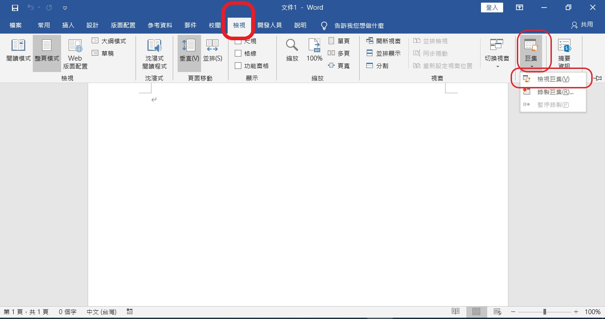
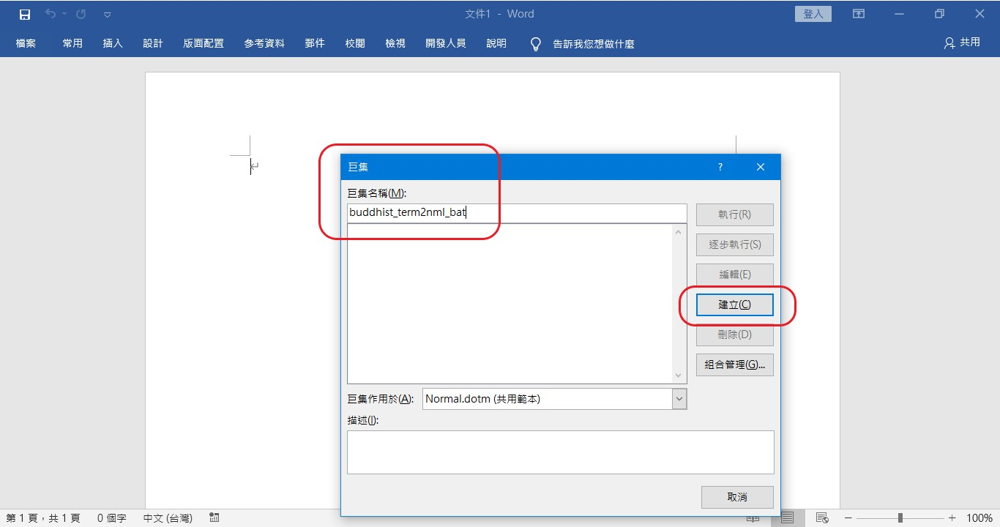
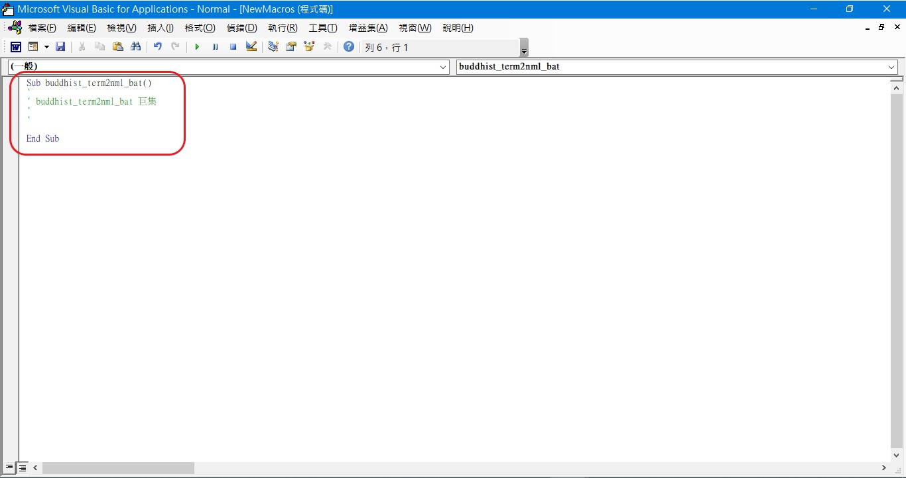
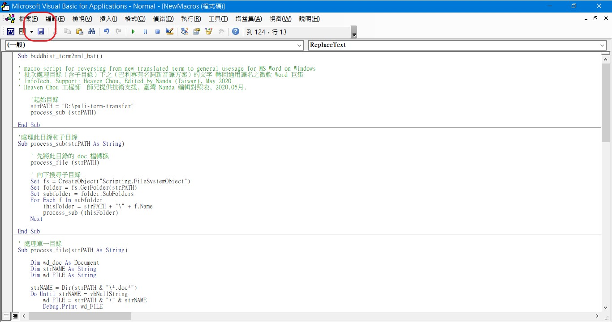

- 將「舊譯詞」改為「新譯詞」-- 觀念的澄清（台語與佛典-- 探討漢譯四阿含與巴利五部尼柯耶的教導，也介紹古漢譯和台語的關聯。）
- 〈「喬答摩」沒有必要「規範」為「果德瑪」〉迴響輯要
- 請於硬碟 D ，新增一個目錄命名為 pali-term-transfer （若無 D 碟，則於 C 碟中新增然巨集中之第 9 列及第 45 列的 D: 須改為 C:）。
- 開啟 Word 檔，執行主功能表的 檢視 → 巨集 → 檢視巨集 ... , 即下圖右邊第二紅框處。 
- 出現一個巨集的對話框，先在中間下方 〝巨集作用於〞 下拉選擇 〝Normal.dot (共用範本)〞，如此一來，此巨集可以適用在其它 word 檔案；若不希望如此，最後也可以刪除它.
- 按下建立後，即會有如下視窗出現，並有一小段程式，如下圖紅框處.
- 再把 〝buddhist-term-to-normal-batch-macro-on-word.txt〞的內容全部複製；
(或將滑鼠點上面〝buddhist-term-to-normal-batch-macro-on-word.txt〞這個鏈結 → 按右鍵 → 〝另存新檔〞或〝另存連結為〞→〝存檔〞→ 再以〝記事簿〞將其開啟 → 全選 → 複製) 並貼入視窗中，如下圖所示。 - 下載〝名相對照檔〞：〝buddhist-term-replaced.txt〞，將此檔案儲存至 D:\pali-term-transfer 或 C:\pali-term-transfer
(或將滑鼠點上面〝buddhist-term-replaced.txt〞這個鏈結 → 按右鍵 → 〝另存新檔〞或〝另存連結為〞→〝存檔〞，如下圖所示。 - 將欲轉換之檔案或目錄（可含次目錄），複製或搬移至 D:\pali-term-transfer 下，或 C:\pali-term-transfer 下。
- 回到 word 視窗後，再次執行主功能表的執行主功能表的 〝檢視〞 → 巨集 → 檢視巨集 ... ,
此時可以看到有一個巨集 buddhist_term2nml_bat 在裡面.
若沒看到，中間的 〝巨集作用於〞 請下拉選擇 〝Normal.dot (共用範本)〞
- 宏（巨集）請點選：〝
- 〝名相對照檔〞：〝
- 資訊更新日期: 05.08, 佛曆 (BE)
2563; 西元 2020 (CE)(2015-06-11 初版)
※※※本 Htmled 版權屬十方法界，歡迎複製流傳；※※※ ※※※法義尊貴，請勿商品化流通！※※※
(例如果德瑪、苟答馬、阿拉漢、美德亞、阿首咖或比庫等等)
藉由 ms Word 巨集 回復為一般譯名
(喬答摩、阿羅漢、彌勒、阿育王或比丘等等)
| date: | 2015-06-11 11:00 |
|---|---|
| modified: | 2020-05-08 |
| tags: | 巴利語, 巴利專有名詞新音譯方案, 果德瑪, 苟答馬, 阿拉漢, 美德亞, 阿首咖, 比庫, 沙利子, 馬哈摩嘎喇那, 摩嘎喇那, 馬哈咖沙巴, 阿首咖, ms word 巨集, ms word 宏 |
| category: | 巴利 |
| summary: | 把【巴利專有名詞新音譯方案】的文字(例如果德瑪、苟答馬、阿拉漢、美德亞、阿首咖或比庫等等)藉由 ms Word 巨集回復為通用譯名(喬答摩、阿羅漢、彌勒、阿育王或比丘等等)之步驟 |
調整字體： (若有異樣，請嘗試多按該選項兩次)
請參考：
※※※ 巨集作者：Heaven Chou ( Heaven Chou 的 網站 、 FB )※※※ ；
※※※ 名相對照及網頁編輯：Nanda ※※※
備註：更名對照之 ods 檔 、 excel 檔；[簡體版（整理中）：ods 檔 、 excel 檔]（2020-05-08 更新）
為減輕學佛者負擔，將標新立異之譯名改回一般譯名
※※※ 巨集作者：Heaven Chou ( Heaven Chou 的 網站 、 FB )※※※ ；
※※※ 名相對照及網頁編輯：Nanda ※※※
然後在上方巨集名稱輸入 〝buddhist_term2nml_bat〞，這是取（含次目錄批次處理）「佛教名相譯語復原至通用譯語」的意思。
然後按下右方的 〝建立〞，如下所述。

請將這些文字全部刪除。 
完成後可以選左上方的儲存, 並關閉此視窗, 就會回到 word 視窗.

選擇 buddhist_term2nml_bat 後，再按下執行，就會把（含次目錄下之）整篇 word 中（含腳註）的標新立異之譯名改回一般譯名。
完成後, 若不想保留此巨集, 只要按下 〝刪除〞 即可。
※※※ 簡體字使用者：（整理中） ※※※
其他步驟，如前面所述類推！
*** 感謝 Heaven Chou ( Heaven Chou 的 網站 、 FB ) 工程師 師兄提供以上技術資訊！
備註：更名對照之 ods 檔 、 excel 檔；[簡體版（整理中）：
願我們一起分享法施的功德、
願一切眾生受利樂、
願正法久住。